Documentation · version 0.1.2
TexKit Studio
An open-source LaTeX writing studio that runs in your browser, on your own computer. No TeX installation, no account, no compile-time limits, and nothing is uploaded.
- Nothing to set up. One
pip install; the LaTeX engine, a package cache and the Word converter come with it. - Unlimited compiles. No time limit, no page limit, no queue. Auto-compile follows your typing.
- Private. Your files stay ordinary files in your own folder. Nothing leaves your computer unless you start an online action.
- Built for papers. Every figure, table and citation is tracked, errors are explained in plain English, and a submission check tells you what is left before you send it.
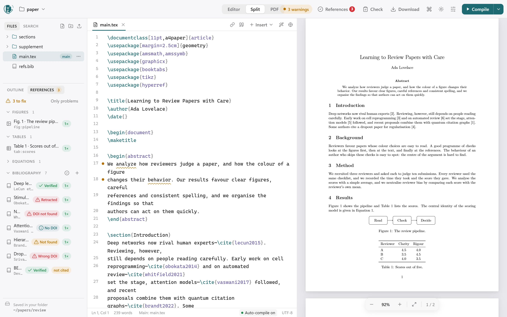
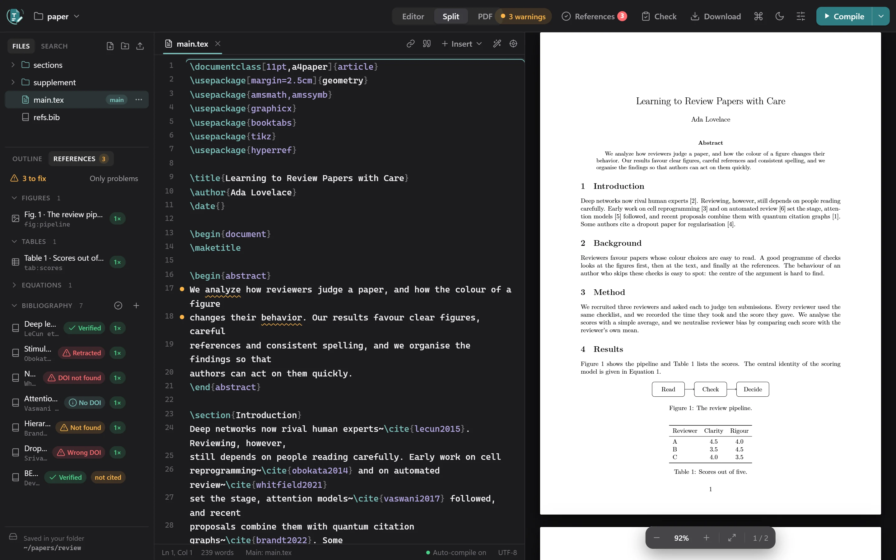
New in 0.1.2: reference verification, US/UK spelling consistency, Set as main file and a bundled package cache. Read the release notes.
Install
You need Python 3.10 or newer. Then:
pipx install texkit-studio # recommended: keeps it in its own environment
# or
pip install texkit-studioThat gives you the texkit command. Windows, Linux and macOS are supported. It has been tested on Windows and Linux; the macOS wheels are built the same way but haven't been tried yet.
- The LaTeX engine (Tectonic) is included in the platform wheels. If your platform has none, it is downloaded and checksum-verified the first time you compile.
- LaTeX packages. The platform wheels also carry a package cache (about 32 MB zipped, 89 MB unpacked). It is unpacked once on the first compile, so ordinary documents compile with no internet at all. See Engine, packages and offline.
- On Ubuntu and Debian, prefer
pipx(sudo apt install pipx): a plainpip installinto the system Python is blocked there, andpython3 -m venvneeds thepython3-venvpackage.
Upgrade and check
pipx upgrade texkit-studio # or: pip install -U texkit-studio
texkit --version
texkit doctor # the engine, packages, Word export and foldersQuick start
Go to the folder with your paper and run the command, the same way code . works:
cd ~/papers/my-thesis
texkitYour browser opens on that folder: files on the left, the editor in the middle, the PDF on the right. Your files stay ordinary files in that folder, so Git, Dropbox and other editors keep working.
- Open or start a project. Click the folder name in the toolbar to open another folder, start one from a template, or reveal the folder in Explorer or Finder.
- Write. The PDF follows your typing a moment after you stop.
- Read the problems. Errors and warnings are explained in plain English and link to the exact line.
- Check before you submit. The References and Check buttons in the header tell you what is left.
Running texkit again while it is already open switches the open studio to the new folder instead of starting a second copy.
Compile and preview
- Compile with the button or Ctrl/⌘ + Enter. By default it also compiles a moment after you stop typing. There is no time limit.
- While it compiles, the preview panel shows a spinner and a progress bar, and the Compile button ignores repeat clicks until the compile finishes.
- Problems in plain English. Errors and warnings link to the exact line, and common mistakes get a one-click fix, such as “Replace with
\includegraphics” or “Add\usepackage{booktabs}”. - Click to jump between the source and the PDF: double-click the PDF, or press Ctrl/⌘ + Shift + J in the editor.
- Offline: if there is no internet, compiles fall back to packages already on your computer.
Which file is compiled
The file with the main badge. If you haven't chosen one, TexKit Studio uses main.tex when that is a complete document, otherwise the first file that has \documentclass and \begin{document} (fewest folders deep, then alphabetical). Hover over the badge to see which rule picked it.
To change it, hover any .tex file, in any sub-folder, and click ⋯ (or right-click) → Set as main file. It recompiles at once. If the file you pick is a chapter rather than a complete document, you are warned.
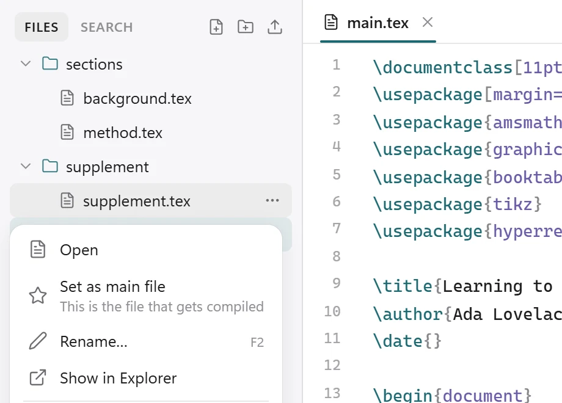
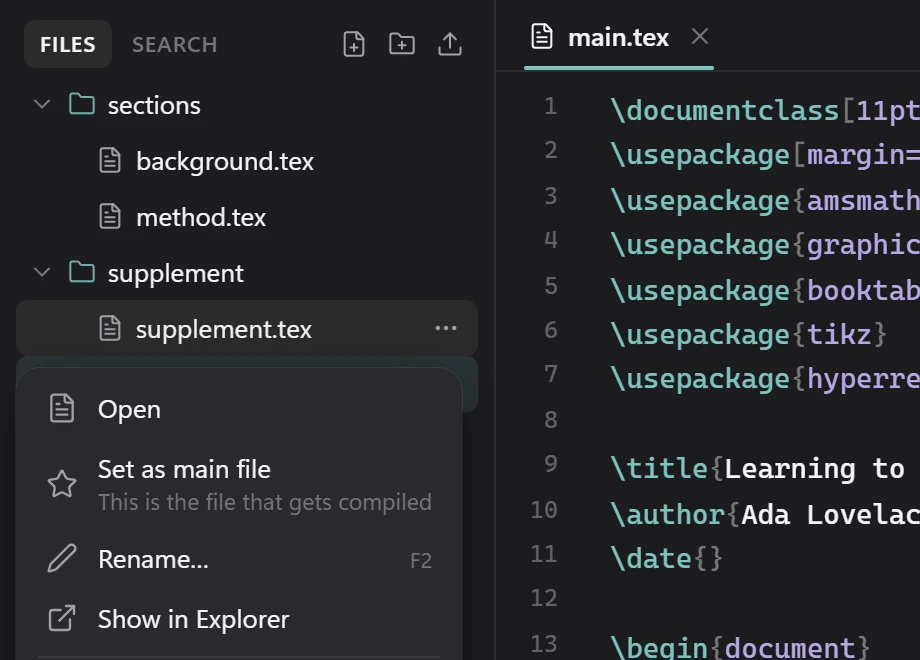
A % !TEX root = ../main.tex line at the top of a chapter makes that chapter compile its root. The choice is stored per folder in .texkit/project.json as mainFile.
Figures, tables and sources, all connected
Many journals require every figure and table to be referred to in the text, and every bibliography entry to be cited. TexKit Studio reads your whole document, including every chapter file, and keeps track of this for you.
- The References panel lists every figure, table, equation and bibliography entry, marked referenced 2× or never referenced / not cited. One click inserts a reference to it.
- The issues panel and the editor flag a figure or table that is never mentioned, a source that is never cited, a
\refor\citethat points nowhere, a figure without a label or caption, figures mentioned out of order, and citations with no bibliography printed. Each comes with a fix, such as adding the missing\labelafter the caption. - Insert reference (Alt + R) and Insert citation (Alt + C) search by number, caption, author, title or key.
- Add a source by DOI or arXiv ID fetches the BibTeX for you.
- Hover over a
\refor\citeto see what it points to. Ctrl/⌘ + click goes there.
Writing tools
- Images: drag one into the text or paste a screenshot. It is saved to
figures/and a complete figure block is inserted. - Tables: build them in a grid, or paste cells from Excel or Sheets.
- Symbols, equations and lists from the Insert menu (Alt + S for symbols).
- Command palette (Ctrl/⌘ + K), search across all files (Ctrl/⌘ + Shift + F), an outline of the whole document, and focus mode.
- Works on desktop, tablet and phone widths, in light and dark mode.
Formatting, like Prettier
Format document (Shift + Alt + F, the wand button, or texkit format in a terminal) tidies the open file: it indents environments, \item text and multi-line {...} groups, lines up the & columns of tables and aligned equations, removes trailing spaces and squeezes extra blank lines.
In .tex files it only ever changes whitespace, so the PDF stays exactly the same; verbatim and lstlisting blocks are left untouched. In .bib files it puts one field per line with the = signs lined up. Turn on Format when I press Ctrl/⌘+S in Settings to tidy on every save.
texkit format # tidy every .tex and .bib file in this folder
texkit format --check # change nothing; exit 1 if anything needs tidying (for CI)
texkit format --indent 4 chapters/Version history
A snapshot of your text files is kept after every successful compile. Compare any version with the current one, and restore it.
Keyboard shortcuts
On macOS, use ⌘ where this table says Ctrl.
| Action | Keys |
|---|---|
| Compile | Ctrl + Enter |
| Compile (also saves) | Ctrl + S |
| Format document | Shift + Alt + F |
| Command palette | Ctrl + K |
| Quick open a file | Ctrl + P |
| Insert reference / citation / symbol | Alt + R / Alt + C / Alt + S |
| Show this line in the PDF | Ctrl + Shift + J |
| Jump from the PDF to the source | Double-click the PDF |
| Go to a label, citation or file | Ctrl + click it |
| Bold / italic | Ctrl + B / Ctrl + I |
| Comment / uncomment | Ctrl + / |
| Find in file / search all files | Ctrl + F / Ctrl + Shift + F |
| Toggle issues / sidebar | Ctrl + Shift + M / Ctrl + \ |
| Editor / split / PDF | Ctrl + 1 / Ctrl + 2 / Ctrl + 3 |
| Focus mode | Ctrl + Shift + Enter |
| Open folder | Ctrl + O |
Reference check
Find the references that are invented, mistyped, retracted or missing a DOI, before a reviewer does.
Check references online looks every bibliography entry up in Crossref, DataCite, OpenAlex and arXiv. Start it from the References button in the header, the ✓ button in the Bibliography panel, the Submission check, or the command palette (Ctrl/⌘ + K).
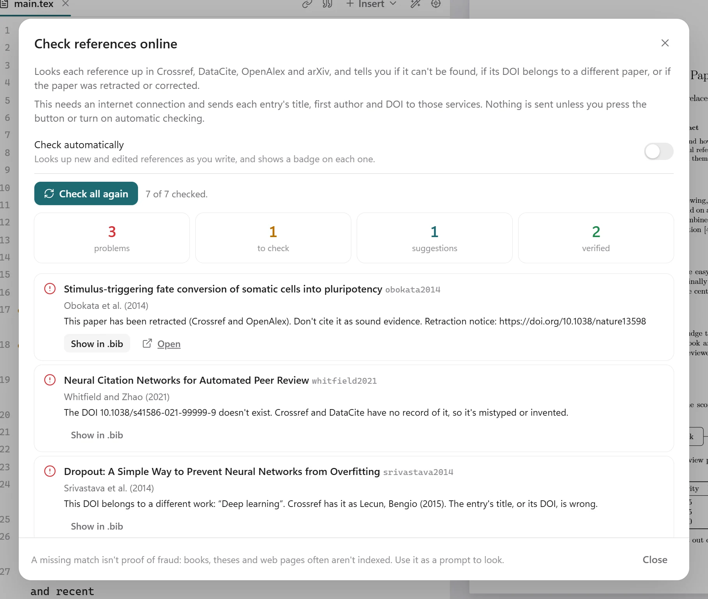
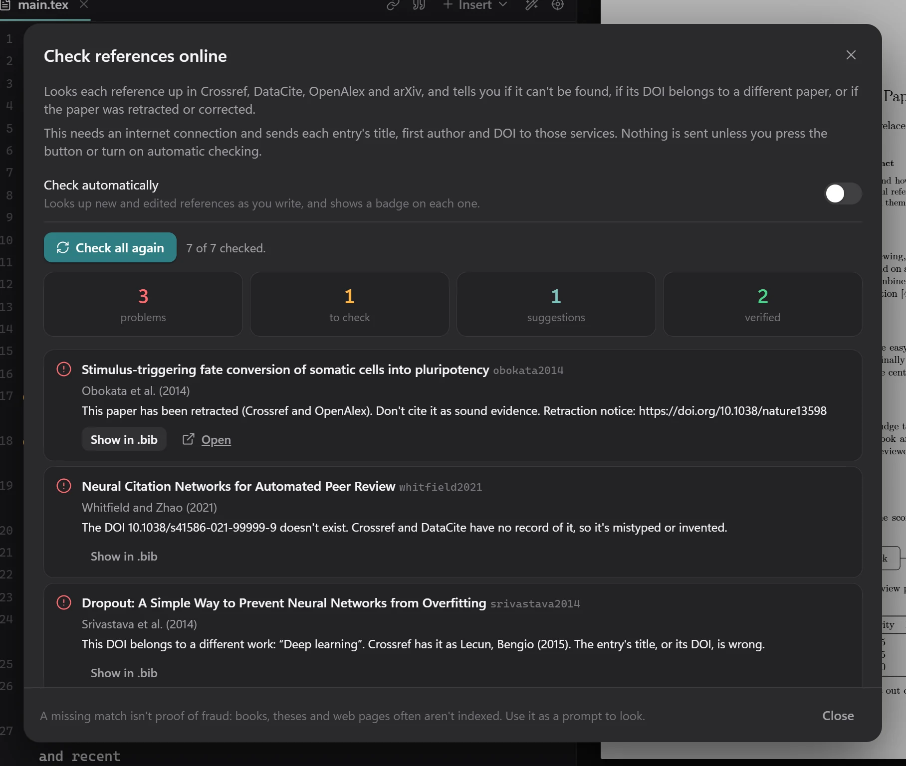
What the badges mean
| Badge | Meaning |
|---|---|
| Verified | The DOI resolves to a paper with this title, and the details agree. |
| Retracted | Crossref or OpenAlex records the paper as retracted. Don't cite it as sound evidence. |
| DOI not found | Crossref and DataCite have no record of the DOI, so it is mistyped or invented. |
| Wrong DOI | The DOI belongs to a different work. Either the title or the DOI is wrong. |
| Not found | No publication with this title was found, and the entry has no DOI. If it is real, add its DOI; if you are not sure it exists, check it by hand. |
| Concern | An expression of concern has been published for the paper. |
| Retraction notice | The DOI is a retraction notice, not the paper itself. Cite the original paper instead. |
| Details differ | The title, authors or year differ from the registered record. |
| Unsure match | A similar title was found, but it may not be the same paper. |
| No DOI | The paper was found but the entry has no DOI. A suggested DOI is shown, with a button to add it to the entry. |
| Corrected | A correction or erratum has been published. Check that you cite the corrected facts. |
| Check authors | The first author differs from the record. |
| Not indexed | Books, theses, reports and web pages often aren't in these services, so check this one by hand. |
A missing match isn't proof of fraud. Use it as a prompt to look: AI assistants sometimes invent references, but plenty of real ones just aren't indexed.
In your workflow
- The References button in the header shows a red count for problems, or a green tick when everything is verified.
- Each entry in the References panel gets a badge, and an entry nobody cites is marked not cited.
- Add DOI to the entry writes the suggested DOI into your
.bibfile. Show in .bib jumps to the entry. - Check references automatically (in the dialog, or Settings) looks up new and edited entries as you write, and only those.
- Results are remembered for a week, and an entry is checked again when you edit it.
What is sent, and when
Each entry's title, first author and DOI are sent to Crossref, DataCite, OpenAlex and arXiv, and only when you press the button or turn on automatic checking. Without internet the check stays off and says so; connect and press the button again. If a service is rate-limiting requests, TexKit Studio waits as long as it asks and tries again before giving up on an entry.
Spelling consistency
Keep to American or British English, all the way through.
Mixing American and British spelling (“color” with “behaviour”, “analyse” in an American text) is underlined in the editor, fixed in one click, shown under a Language filter in the issues panel, and summarised in the Submission check.
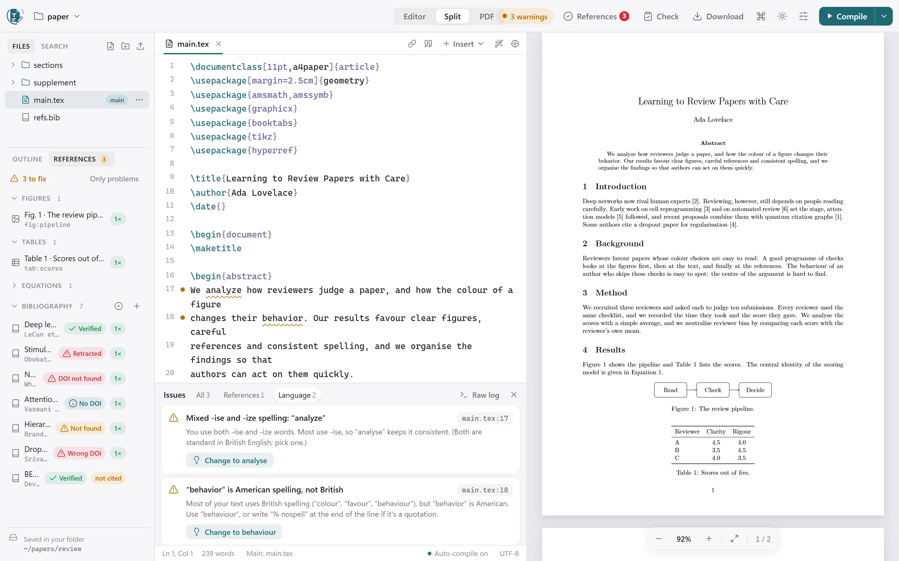
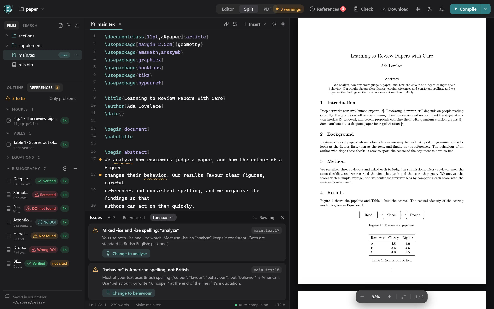
Choosing the language
Open Settings → Spelling:
| Choice | What it does |
|---|---|
| Auto | Follows \usepackage[british]{babel} (or american) if the document declares one, otherwise whichever variant you use most. |
| US | Flags British spellings. |
| UK | Flags American spellings. |
| Off | No spelling-consistency checks. |
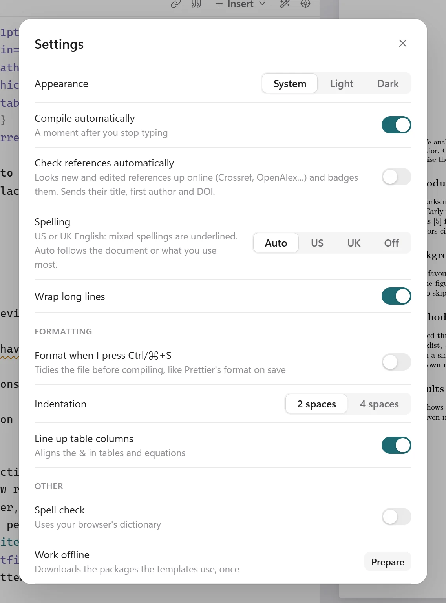
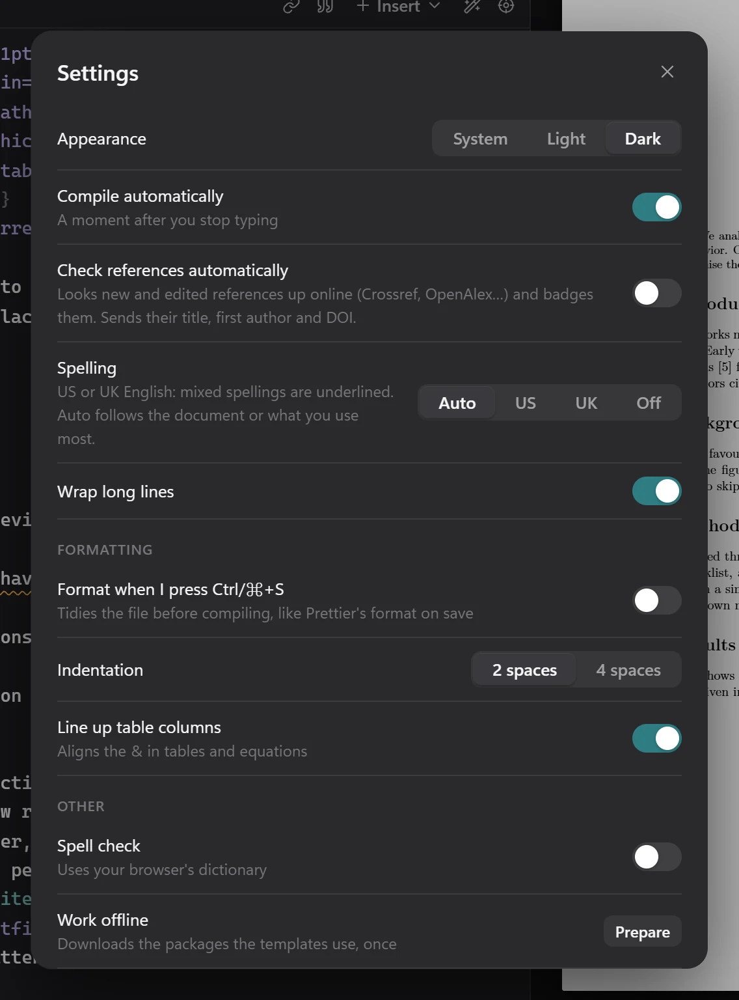
Good to know
- “-ize” is accepted in British text (Oxford spelling) unless you also use “-ise”.
- Maths, code, citations, names in mid-sentence and affiliations are ignored.
- Add
% nospellto the end of a line to skip it, for example for a quotation. - Add
% texkit-spelling: british,americanoroffanywhere in a file to set the language for that document or turn the check off.
Submission check
One list of what is left before you send the paper: errors, text running into the margins, unreferenced figures and tables, uncited sources, missing files, mixed spelling, and a prompt to check your references online. It also shows the page, word and abstract counts.
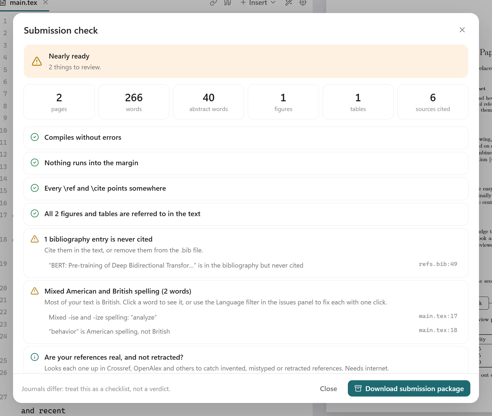
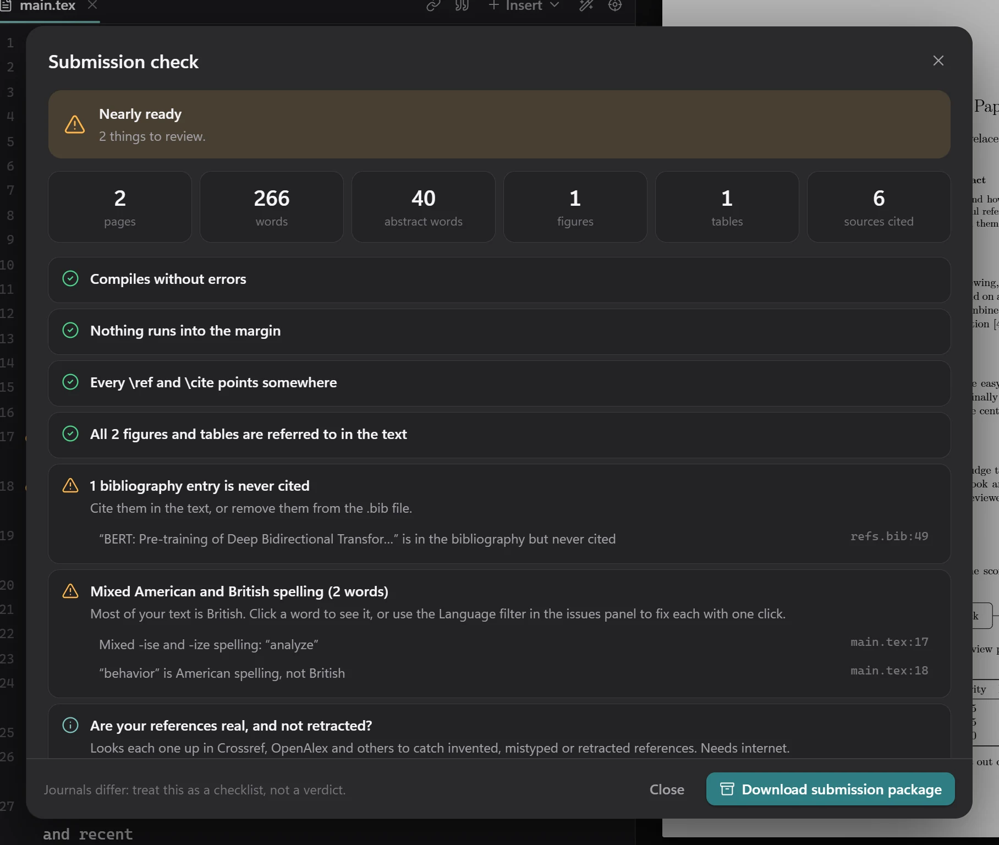
Journals differ: treat it as a checklist, not a verdict.
Downloads
Use Download in the header to get:
- a PDF;
- a Word file (
.docx, converted with Pandoc; formatting is approximate); - the whole project as a ZIP;
- a submission package: one flattened
.texwith its.bbland only the images it uses, as arXiv and journals ask for.
Templates and import
- Templates: Starter tour, Blank article, IEEE conference, Elsevier and Thesis. Start one from the folder menu in the toolbar.
- Import a ZIP, for example an Overleaf download, from the folder menu, or run
texkit paper.zip.
Engine, packages and offline use
TexKit Studio compiles with Tectonic, an XeTeX-based engine. The platform wheels carry it, together with a package cache.
- The package cache (about 32 MB zipped, 89 MB unpacked) holds the common classes at 10, 11 and 12pt, about 190 popular packages, the standard fonts, BibTeX styles and the main babel languages. It is unpacked once, on the first compile, into TexKit Studio's own data folder.
- Anything outside it is fetched the first time a document uses it, then cached. Offline, that compile fails with a clear message instead.
- With the pure wheel or a source install, nothing is bundled: the engine and every package are fetched on first use, and that first compile can take a few minutes.
texkit doctorshows the state of the engine and the packages.texkit prepare-offlinedownloads the rest of what the templates need.- If you set
TECTONIC_CACHE_DIRyourself, TexKit Studio uses your cache and leaves its own alone.
Journals, EPS images and a full TeX installation
Journal and conference templates
Templates written for pdfLaTeX compile as they do on Overleaf. The built-in engine is XeTeX-based, so TexKit Studio smooths over the differences before your document starts:
- pdfTeX-only commands (
\pdfgentounicode,\pdfglyphtounicode,\pdfminorversion, …) are accepted; [pdftex]and[dvips]driver options become[xetex];biblatexswitches from Biber to BibTeX, and an info message says so;- Unicode text such as
š,×or–prints correctly with the usual 8-bit fonts instead of vanishing or showing the wrong glyph.
EPS images
The engine can't embed .eps files itself, so TexKit Studio uses name-eps-converted-to.pdf when it sits next to the image (Overleaf and Prism leave these behind), otherwise converts the image with Ghostscript if it is installed. With neither, the compile still succeeds, the image is a grey placeholder, and the issues panel says which one is missing. Converted files live in the build cache, not in your folder.
A full TeX installation, when a document needs one
If TeX Live, MiKTeX, MacTeX or TinyTeX is installed, documents that need more than the built-in engine are built with it automatically: an index or glossary, biblatex with Biber styles, minted, packages newer than the built-in LaTeX (2021), and fonts by name. If the built-in engine fails for such a reason, the installation is tried as a second attempt and the better result is kept. Without one, the issues panel names what the document uses and what is missing. Run texkit doctor to see what was found.
Settings and options
In the app
Open Settings (the sliders icon in the header):
| Setting | What it does |
|---|---|
| Appearance | System, Light or Dark. |
| Compile automatically | Compile a moment after you stop typing. |
| Check references automatically | Look up new and edited references online and badge them. Sends their title, first author and DOI. |
| Spelling | Auto, US, UK or Off. See Spelling consistency. |
| Wrap long lines | Wrap lines in the editor. |
| Format when I press Ctrl/⌘+S | Tidy the file before compiling, like Prettier format on save. |
| Indentation | 2 or 4 spaces. |
| Line up table columns | Align the & in tables and equations. |
| Spell check | Underline misspelled words using your browser's dictionary. |
Per folder
Options for one folder go in .texkit/project.json:
{ "engine": "auto", "shellEscape": false, "autoInstall": false, "mainFile": "main.tex" }| Key | Meaning |
|---|---|
engine | auto (default), tectonic or system. |
shellEscape | Lets that folder's documents run programs, which minted and svg need. Off by default; only turn it on for documents you trust. |
autoInstall | Lets MiKTeX download missing packages. Off by default, because MiKTeX would otherwise open a dialog that an automatic compile can't answer. |
mainFile | The file to compile. Set for you by Set as main file. |
Environment variables
| Variable | Meaning |
|---|---|
TEXKIT_ENGINE | Overrides engine: auto, tectonic or system. |
TEXKIT_SHELL_ESCAPE=1 | Overrides shellEscape. |
TEXKIT_TEXBIN | The folder holding the TeX programs, if they aren't found on their own. |
TEXKIT_TECTONIC | Use this Tectonic binary instead of the bundled one. |
TEXKIT_GS | The Ghostscript program used for EPS images. |
TECTONIC_CACHE_DIR | Use this package cache instead of TexKit Studio's own. |
TEXKIT_DATA_DIR, TEXKIT_CACHE_DIR | Where TexKit Studio keeps its data and its build cache. |
TEXKIT_NO_PRELUDE | Turns off the pdfTeX-compatibility layer described in Journals. |
Commands
texkit PATH # open another folder (or the folder of a .tex file, or a .zip)
texkit --port 9000 # use a different port (default 8765; a free one is picked if busy)
texkit --no-browser # start without opening a browser tab
texkit --version # show the version
texkit compile [PATH] # compile without the UI and print any problems (handy for CI)
texkit format [PATH] # tidy .tex and .bib files, like Prettier (--check for CI)
texkit prepare-offline # download the packages the templates use, for offline work
texkit doctor # check the engine, packages, Word export and foldersPrivacy and safety
- The server listens on
127.0.0.1only, and every request needs a session cookie set by the link the command opens. - Requests with another
Hostheader are rejected, which blocks DNS-rebinding attacks. - Documents can't run programs (shell-escape is off) unless you turn on
shellEscapefor that folder yourself. - Deleting a file moves it to the Recycle Bin or Trash.
- Your files are never uploaded. The only things that go online are the actions you start: looking up a DOI, and Check references online, which sends each entry's title, first author and DOI to Crossref, DataCite, OpenAlex and arXiv.
Troubleshooting
The page says “Open TexKit Studio from your terminal”
For privacy, the page only works through the link the command opens. In a terminal, go to your project folder and run texkit.
The first compile is slow
With a platform wheel, the first compile unpacks the bundled package cache, which takes a few seconds, once. With the pure wheel or a source install, every package is fetched on first use, and that can take a few minutes on a slow connection. texkit doctor shows which case you are in.
A compile fails with no internet
The document uses a package that isn't in the bundled cache and hasn't been downloaded yet. Connect once and compile, and it is cached for next time.
“Check references online” says it has no internet connection
The check needs a connection and stays off without one. Connect and press the button again.
An entry says the service is rate-limiting requests
Crossref, OpenAlex or another service asked TexKit Studio to slow down and kept asking. Wait a minute and press the button again.
An EPS image is a grey placeholder
Neither a name-eps-converted-to.pdf next to the image nor Ghostscript was found. See EPS images.
pip install is blocked on Ubuntu or Debian
Use pipx: sudo apt install pipx, then pipx install texkit-studio.
The default port is busy
TexKit Studio picks a free port by itself. To choose one, use texkit --port 9000.
Develop
TexKit Studio is a pure Python repository: no Node.js and no build step. The web UI is plain JavaScript modules in src/texkit_studio/static/, with CodeMirror and PDF.js vendored by scripts/vendor.py.
git clone https://github.com/AbidHasanRafi/texkit-studio.git
cd texkit-studio
python -m venv .venv
.venv/Scripts/activate # Windows (on macOS/Linux: source .venv/bin/activate)
pip install -e ".[dev]"
pytestThe source, the issue tracker and the contribution notes are on GitHub. TexKit Studio is released under the MIT licence.